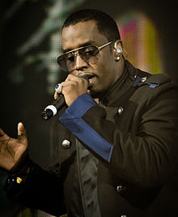

Sean John Combs was born in a public housing project in Harlem, New York City,and was raised in Mount Vernon, New York.His mother, Janice (Smalls), was a model and teacher's assistant and his father, Melvin Earl Combs, was an associate of convicted New York drug dealer Frank Lucas.At age 33, he was shot to death while sitting in his car on Central Park West, when Combs was a child.
Combs graduated from the Roman Catholic Mount Saint Michael Academy in 1987. He played football for the academy, and his team won a division title in 1986. Combs said that he was given the nickname "Puff" as a child, because he would "huff and puff" when he was angry
After dropping out of Howard University in 1990, after two years as a business major, Combs became an intern at New York'sUptown Records. While talent director at Uptown, he helped develop Jodeci and Mary J. Blige.In his college days Combs had a reputation for throwing parties, some of which attracted up to a thousand participants.In 1991, Combs promoted an AIDS fundraiser with Heavy D held at the City College of New York (CCNY) gymnasium, following a charity basketball game. The event was oversold, and a stampede occurred in which nine people died.
In 1993, after being fired from Uptown, Combs established his new label Bad Boy Entertainment as a joint venture with Arista Records, taking then-newcomer The Notorious B.I.G. with him.Both The Notorious B.I.G. and Craig Mack quickly released hit singles, followed by successful LPs, particularly The Notorious B.I.G.'s Ready to Die. Combs signed more acts to Bad Boy, including Carl Thomas, Faith Evans, 112, Total,and Father MC.The Hitmen, his in-house production team, worked with Jodeci, Mary J. Blige,Usher, Lil' Kim, TLC, Mariah Carey, Boyz II Men, SWV, Aretha Franklin, and others.Mase and The Lox joined Bad Boy just as a widely publicized rivalry with the West Coast's Death Row Records was beginning. Combs and The Notorious B.I.G. were criticized and parodied by Tupac Shakur and Suge Knight in songs and interviews during the mid-1990s.During 1994–1995, Combs produced several songs for TLC's CrazySexyCool, which finished the decade as number 25 on Billboard's list of top pop albums of the decade.
In 1997, under the name Puff Daddy, Combs recorded his first commercial vocal work as a rapper. His debut single, "Can't Nobody Hold Me Down", spent 28 weeks on theBillboard Hot 100 chart, peaking at number one.[25] His debut album, No Way Out, was released on July 1, 1997, through Bad Boy Records. Originally titled Hell up in Harlem, the album underwent several changes after The Notorious B.I.G. was killed on March 9, 1997.[26] Several of the label's artists made guest appearances on the album. No Way Outwas a significant success, particularly in the United States, where it reached number one on the Billboard 200 in its first week of release, selling 561,000 copies.The album produced five singles: "I'll Be Missing You", a tribute to The Notorious B.I.G., was the first rap song to debut at number one on the Billboard Hot 100; it remained at the top of the chart for eleven consecutive weeks and topped several other charts worldwide. Four other singles; "Can't Nobody Hold Me Down", "It's All About the Benjamins", "Been Around the World", and "Victory", were also released. Combs collaborated with Jimmy Page on the song "Come with Me" for the 1998 film Godzilla.
The album earned Combs five nominations at the 40th Grammy Awards in 1998, winning the Grammy Award for Best Rap Album. On September 7, 2000, the album was certified septuple platinum by the Recording Industry Association of America for sales of over 7 million copies. In 1997, Combs was sued for landlord neglect by Inge Bongo. Combs denied the charges. By the late 1990s, he was being criticized for watering down and overly commercializing hip hop, and for using too many guest appearances,samples, and interpolations of past hits in his new songs